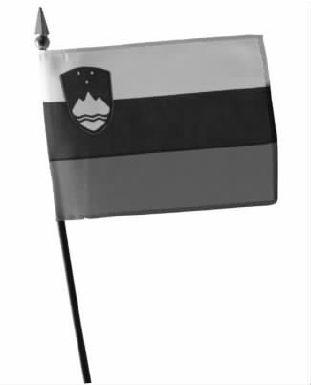
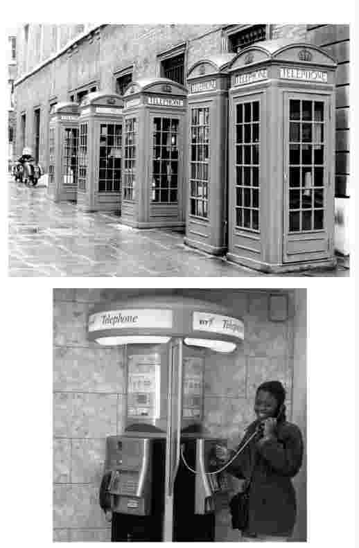
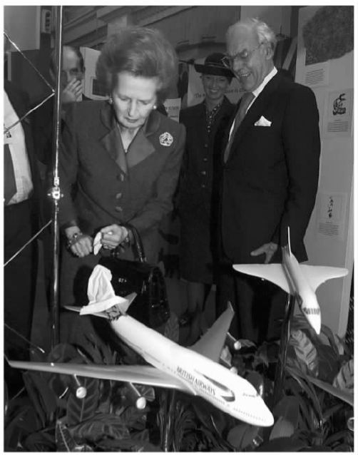

人们可以利用物品和环境构建自我意识，表达身份意识。然而，身份的构建远非表达谁是谁的问题；它可以是个人或组织，甚至可以是国家为创造一个独特的形象和意义而采取的审慎而周密的尝试，旨在影响甚至是支配他人对自己的认知和理解。
就个人而言，我们生活的这个时代充满了各种技术，可实现的主要变革之一就是自我的转型。对于现在的大多数人来说，身份不仅是先天遗传或后天培育的能力的体现，它已经成为了一个选择性的问题，这种选择甚至包括了身体整形。在美国，进行这种或那种整容手术的人数和消费金额已经达到了惊人的程度。广告推出了一系列我们可以成为也应该成为的形象，不断地鼓励我们成为自己内心希望成为的人，我们只需要购买它们提供的产品，便可成就这类转型。广告的影响看似相对温和，但其力量不容小觑。
作为刺激消费的一个手段，个人形象商业化的趋势席卷了全球，并造成了不寻常的效果。比如在服装、化妆品、食物和音乐等方面，一个日本青少年身上就可以反映出其所受到的民族传统教育的影响，同时他也有可能表现得和世界上其他国家的同龄人一样。换言之，一个人可以隶属于一种文化，但也可以同时隶属于一种或多种亚文化，尽管这些文化的主流形式之间相似点甚少。
一方面，这种影响力更为广泛地渗透到了世界的各个角落；另一方面，为了追寻更好的生活方式，大批移民涌入比较富裕的国家，这便导致了另外一种转型的产生。现代技术，如卫星通讯、小规模的印刷技术以及互联网，使人们能够成为主方社会某个职业亚文化领域（如医学和建筑）内的功能型市民；与此同时，他们的家庭和居住地区仍保留了他们心目中的本族文化的精华，并不受外界的影响。
在很大程度上，这一点对于个人而言仍是一个选择上的问题。现代通讯的范围和灵活性使移民能够轻松地与远方的家乡文化保持联系，这样便不仅能维持还能加强他们最初的身份意识。同时，他们减少了吸收主方文化和向主方文化妥协的需要。就主方文化而言，它既能带来文化的丰富性和多样性，也会带来明显的差异，尤其是视觉上的差异，而这些差异很容易成为怨恨的对象。
第二次世界大战以后，随着非殖民化的发展，大量国家纷纷摆脱殖民地的身份。二十世纪八十年代末，前苏联解体，又有许多国家纷纷独立。这些国家都急于寻找各自的符号来宣告新建立起来的独立政权。身份建构的另一个方面便来源于此。纹章图案中充满神秘感甚至带有攻击性的生物（如鹰、狮子和狮身鹫首的怪兽）常常与表示仁爱的形象（如身着民族服饰，面露微笑，手上通常还抱着一捆谷物的女性）并置。这类图像常常出现在硬币和纸币上。在这个问题上，形象设计也不过是从一系列的可能中做选择。

图22 传统创新：斯洛文尼亚的国家形象。
即便是在那些早已确立政权的国家，形象问题仍可引发关注。比如，玛丽安娜是法国的象征，重新设计这一妇女形象，不可避免地引发了接二连三的激烈争论。随着二十世纪渐渐结束，在英国发生的最不可思议的一件事情就是有人提议要“重新打造”国家形象，要改变外国人眼中的英国形象，使其能传达“时尚英伦”的新潮概念。结果，彻底的保守派坚持要维持现状，另一些人则提倡以市场营销为基础模式，认为所有的事情都要跟上“时尚”，这两派人注定谁也无法说服谁。他们之间不是在辩论而是在争论，若用辩论来形容，未免夸大了他们之间的交流。这些倡导品牌更新的人犯了一个致命的错误，他们不知道将商业概念就这么强加到其他背景中是没有希望获得成功的。基于一种粗俗的、过度简单化的判断，他们傲慢地提出商业世界才是“真实世界”，正如它经常被人称道的那样，而且，他们还妄想使商业世界的概念成为全部生活的典范。实际上，一个商业公司可以通过管理旗下的产品和服务项目来确立一个品牌，相比之下，任何一个政府，即便是施行独裁统治的政府，要想控制社会生活中的方方面面，所要面对的困难会大得多。
关于国家形象的争论或许会让人觉得奇怪，但是，即便是在没什么目标激励人民的工业国家里，它起到的推动作用也是毋庸置疑的。例如，二十世纪八十年代，随着国有电话业务的私营化，英国电信成立了，此时在英国发生了一场抵制引进新型电话亭的运动。为表明为平民服务的自主立场，英国电信决定撤换掉长期以来遍布英国境内的鲜红色电话亭。它以低价从美国制造商手中现货购得一款新型的玻璃电话亭。英国电信称此电话亭效率更高，事实上，在很多方面它们确实如此。然而，原有的电话亭是从1936年开始使用的，它们已经成了代表英国形象的一个特色标志，大量出现在旅游海报和宣传册上。所以，英国电信做出的这一决定引发了公众强烈的抗议。虽然在此之后，英国电信对电话亭进行了多次重新设计，但并未真正彻底平息因替换原有的、深入人心的、独一无二的文化景观元素而引发的怨愤。这种对改变的抵制可能基于怀旧情愫，但却带来了实实在在的问题，因此民众的抵制并不仅仅是一时冲动。
全球化发展带来了众多影响深远的问题，其中之一便是文化差异对设计实践的影响。对于有意愿扩充市场的公司而言，文化差异带来的问题可能暗藏着不少危险。美国的惠而浦家用电器公司不得不试着去设计一套产品发展的全球式/地方式方案，这套方案的出发点是产品的概念要能适应不同国家的情况。1992年，它推出了一款轻巧型“世界洗衣机”。在印度，有必要在该洗衣机上增加一项防缠绕功能，因为当地人会用它来清洗十八英寸长的莎丽；在巴西，则要增加浸泡功能，因为当地人认为只有在清洗前先浸泡一段时间才能把衣物洗干净。

图23 捍卫传统：英国旧式（上）、新式（下）电话亭。
相反，吉列公司认为文化差异在剃须方面是没有什么影响的。正是基于这样的认知，吉列公司获得了极大的成功。它没有花上百万去开发适合不同国家喜好的产品，而是一视同仁地对待所有市场，试着把同样款型的剃须刀推销给所有人，这一策略取得了极为广泛的成功。很明显，文化因素是跟具体产品的特殊使用模式相关的。一般而言，全球模式可能适合某些产品，尤其是那些功能更为简单的产品，但是其他一些产品则要求在细节上进行调整。另外，在一些市场上，人们对不同产品的具体需求也可能成为其中一个因素。
所以，跨文化设计所面临的一个两难的困境就是判断何种程度内的文化身份是固定的，或者文化身份能够改变到何种程度。由于计算的失误而造成的问题可以是相当严重的，人们会以保护文化身份的名义对它进行广泛的抵制。这些人抵制世界大同的模式，尤其是带有全球化特征的更为自由的贸易和传达的泛滥。
在这种情况下有两点值得强调。第一，我们有大量的机会去确认任何具体环境下的各种特征，还可以用有别于全球性组织的方式来进行设计。在韩国，冰箱都设计有发酵泡菜的功能。所谓泡菜就是腌制的味道辛辣的卷心菜，是韩国餐桌上不可缺少的一种传统食物。在土耳其，小巴，即小型公共汽车，是一种非常灵活的公共运输工具，可上门接送乘客。当昂贵的进口车不能满足当地需要时，当地兴起了一项产业，研发出许多适合当地环境的车型，甚至还可以为所有的驾驶员量身定制小巴，以满足他们的具体需求。
第二，全球性市场的渗透，在具体需求上唤起了我们对地区身份确认的需要，与此同时，为了适应相关市场范围的扩大和多样性的增加，我们也需要若干能与之相抗衡的国际性工商企业。如果新的可能行得通或值得做，那么设计师需要面对的一个主要问题就是如何使来自不同文化背景的人能够解决改变所带来的各种问题。换言之，工商企业应该对不同文化的要求予以回应，改善人们的生活。产品和服务的设计要适用、清楚、便捷、令人满意，并能够融入人们的生活方式。文化身份并不像琥珀里的昆虫那样是永远不变动的。它不断发展、转变，设计是其中一个主要的元素，它激活了人们的这种潜在意识。
总而言之，用设计专业的术语来说，现代商业公司操控了有关身份的讨论，这些公司花大笔钱来设计身份是什么以及身份代表了什么。企业形象的概念源于军队和宗教组织。比如，古罗马军团就有着非常强烈的视觉形象。统一的制服和鹰饰军旗为这个团体带来了一致性，表示了共同的纪律性和从属性。十七世纪的西班牙军队成了当代的首例。他们同样通过引进统一的着装和武器配备来提高其令人敬畏的声誉。与以上情形不同，天主教会则通过罗马帝国的教士团以及明显的视觉手段，如权杖和徽章，一直维持着它古老的组织形象。
在工业化之前，大部分的商业单位都很小；当时，拥有十到十五个员工的单位就被视为规模很大了。只有一小部分商行（如造船所）才雇用大量员工。到了十九世纪，随着那些地理分布很广的大型企业的发展，企业逐渐需要在员工中形成某种公共形象，这个形象同时也要能传达给公众。英国一家大公司中部铁路公司到十九世纪末的时候，已经拥有了九万名员工。从全部列车的装饰、印刷字体和建筑风格，到员工的制服都为其广泛的业务带来了整体的一致性。
二十世纪早期，随着大规模生产的出现，大公司的统治地位得到了巩固。1907年，建筑师及设计师彼得·贝伦斯被任命为德国电气巨头通用电气公司（简称AEG）的艺术总监，对所有跟视觉表现有关的企业活动有绝对的管理权。身为艺术总监，他必须负责建筑设计、工业产品和消费品设计、广告策划、宣传计划以及展览谋划。企业徽标上公司名称的缩写就采用了他设计的一款字样。这款字样为所有印刷品带来了和谐一致的效果，现在仍然是公司视觉形象的基本元素。
奥利维蒂公司和IBM公司（国际商用机器公司）虽然所属领域不同，但在二战以后都已经成了设计方面的典范。起初，奥利维蒂公司在意大利生产一系列电器产品，后来又开始生产电子器材。在整个发展过程中，公司并不强调要保持设计的一致性。相反，它招募了一批杰出的设计师，包括马里奥·扎努西、马里奥·贝利尼、小埃托雷·索特萨斯以及米歇尔·德·卢基。公司认为每个具体的物品本身都应该是一件出色的设计，所以给了这些设计师大量的自由，对他们的工作予以大力支持，即使是公司徽标也被频频更换。公司坚信，如此一来，公司的整体形象便不会墨守成规，而是充满了连绵不断的创造力。奥利维蒂公司的政策中一个显著的特点就是公司不会雇用专职设计师。为了保持设计师的创作生命力，公司一贯要求这些设计师有一半的时间在公司外工作。
IBM公司也聘用了同样有非凡才能的设计师，其中包括保罗·兰德、查尔斯·埃姆斯和雷·埃姆斯夫妇、密斯·范·德·罗厄和埃利奥特·诺伊斯等。然而，与奥利维蒂公司不同的是，IBM公司更加严谨，产品和印刷品都受到严格的指导方针和标准规范的限制。甚至，曾有一度，它要求员工按规范统一着装以符合公司整体形象。
二十世纪九十年代初，奥利维蒂公司在顺应新技术和新产品时面临了严重的问题，设计在公司中的地位也被削弱。由于面对改变没有采取正确的应对，即便是一系列非常优秀的产品和传达设计最终也无法挽回这个失策带来的后果。这也表明，无论多么杰出的设计，单靠它是无法确保在商业上取得成功的。随着个人计算机制造商的大量涌现，IBM公司同样也遭遇到了实力很强的对手，尽管如此，它在设计方针上还是坚持了原有的高标准。二十世纪九十年代，IBM公司又恢复了往日的地位，再度推出了优秀的产品，如理查德·萨帕于1993年设计的Think Pad手提电脑和Aptiva台式电脑。生产这些产品的目的在于表明IBM公司在这个领域仍扮演主要角色，而设计是它传达自己形象时不可缺少的一部分。
很多形象工程（如福特汽车公司的徽标）是在经过了长时间的演变和不断的修改后，才在保留原有风格的基础上建立起来的，但有时，有些形象的确立速度实在惊人。二十世纪八十年代初，由史蒂夫·乔布斯创立的苹果电脑公司和其他几家公司一度让IBM公司陷入了窘境。苹果电脑公司有着鲜明的企业形象——彩虹色苹果的徽标，并在商业领域的各个方面都进行了设计。麦金托什个人电脑是易用型电脑界面设计方面的标杆，而且，它的包装也与众不同。运送麦金托什电脑的包装盒设计得十分巧妙，而且，每个部件都按顺序摆放，上面附有说明，介绍这个部件应放在哪儿以及该如何连接。所以，客户在取出货物的同时就可以快速地进行机器组装。机器顺利组装完毕后，马上就能使用。随后，在这个充满变数的行业中，尽管苹果电脑公司的地位时有起伏，但它在设计和变革上的付出，一直是苹果电脑公司在传达其企业形象时重要的、不可或缺的一部分。
随着电子商务的出现，通过使用互联网，企业形象可以更快速地建立起来。虽然在预期的购买者中形成对企业的即时认可相当重要，但对于企业形象和由此产生的信赖感而言，独特的视觉形象只有建立在对产品质量、使用及服务的承诺之上才能树立成功的企业形象，而这一点却常常被人们所忽视。此外，这一点在服务行业中表现得更为明显。例如，成立于1973年的联邦快递开辟了文件和包裹空运服务市场。二十年后，它已经发展成为一个拥有四百五十架飞机、四万五千辆汽车的团队，服务遍及全球。此时，公司却发现原有的徽标已无法传达公司已经确立的快捷、可靠的服务口碑，于是便委托朗涛设计顾问公司提供改进建议。整个过程中的关键就在于人们意识到这家公司已经被普遍性地称为FedEx，这个名词甚至不时地被用来表示动作了。所以，人们将这个标志选作新的徽标。公司在飞机、汽车、标志和文件上都印上了这个徽标，达到了更为醒目的效果。它的简洁性不仅使传达更为清晰明了，而且比起之前的徽标，在油漆和印刷方面也节省了大量开销。
然而新的企业形象若没有高效的服务支撑也是没有用的。1994年，视觉形象领域的新突破伴随着新一轮技术革新产生了，这一点正好得到了强调。条形码出现后，又有一款新的私有软件FedEx Ship被研发出来，供顾客使用。顾客只需通过一个简单的界面，就能追踪到包裹的投递情况或者委托公司托运包裹。之前，顾客如果想要了解某个具体包裹的投递情况，就必须致电联邦快递（对方付费电话），然后由公司员工设法为顾客查找包裹的下落。这样一来，不但增加了电话费，顾客也等得不耐烦了。新的软件引入了搜索功能，由顾客自行控制，不但为顾客提供了更好的服务，同时又替联邦快递省下了大笔操作费用。
图24 特色鲜明、成本低：美国朗涛设计顾问公司为联邦快递设计的企业徽标。
一个新的视觉形象也能成为公司主要目标策略改变的信号。2000年，朗涛设计顾问公司再次出马，为英国石油公司设计了一个新的公司形象。新形象在公司一贯使用的黄绿调配模式上，采用了一个独特而又生动的太阳式的符号。新形象伴随着广告和“超越石油”的广告词，表示了公司的行为模式将朝更广的领域发展。愤怒的环保主义者攻击英国石油公司，称该公司的绝大部分业务还是以石油为基础的。新形象是否能够维持下去，一方面，大大地取决于公司未来的作为，另一方面，也取决于形象本身在多大程度上传达了它要传达的意义。
改变企业形象能够大大地提升对企业的预期，但是有时也会带来灾难性的后果。1997年，伦敦的纽厄尔和索雷尔公司耗资六千万英镑，为英国航空公司重新打造形象。新形象推出时碰巧遇上公司与机场员工之间产生了纠纷。后来，由于很多机场员工参与罢工，最终导致航班被取消。对于一个正在宣传其服务质量的机构而言，这是很不走运的。同时，在新形象的一个细节问题上也引发了一场争议。公司决定从各地不同的民族艺术中取材，并将新形象印在机尾。新形象试图打破其本土公司的形象，而将公司重新定位为面向全球的运输机构。机尾的设计受到了一些赞扬，同时也遭受了大量的奚落。不久，这个形象就被从机尾悄悄取下，换上了英国国旗的标志。由于英国航空公司60%的乘客都非英国公民，企业定位引起的问题着实不容小觑。新形象引发了一些闹剧般的场面，如英国前首相撒切尔夫人在参观飞机模型展览时，赫然将一块手帕遮在一架印有民族风情图案的飞机尾翼上，此举引发了媒体的关注。然而，具有讽刺意味的是，英航的这个设计项目在世界航空公司中可算是最有深度的设计之一。它真正实现了一些创新，比如把头等舱和商务舱的座位调整成床。事实上，在实际操作过程中，英国航空公司在目标市场取得的认知效果比其颇为不幸的推广宣传取得的效果要好得多。

图25 改变的风险：英国前首相撒切尔夫人用手帕盖住飞机模型上的英航新形象。
这正好证明了企业形象设计领域内可能存在的最大问题是意象和形象之间频繁出现的混淆。前者指的是能够使客户轻松识别某家公司的视觉影像。很明显，对公司而言，它是一项有利又必要的功能。后者指的是客户对这个意象的理解，或者他们对公司产生的预期。意象是公司传达给顾客的，表达了公司希望被顾客了解的方式；而形象是在客户体验了公司所传达的信息后的实际情况。只有当两者协调一致时，才有可能谈到企业的整体性。但是如果两者之间存在鸿沟，在视觉形象上砸再多的钱也无法挽回客户的信任。换言之，只有好的产品或者服务才能维持意象的可信度。然而，好的产品或者服务并不一定需要一个昂贵的意象设计。最理想的情况就是，好的产品和服务辅以一贯高质和可信的传达手段，这时，意象和形象就是一回事了。